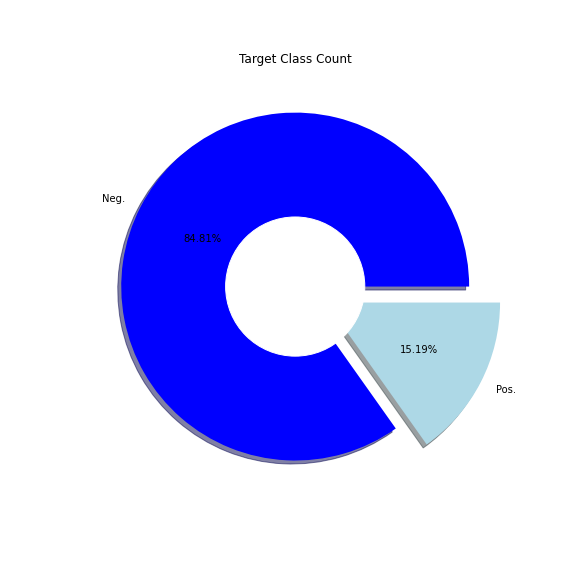

Observation
Click any plot to get an in-depth analysis
Distribution of Positive and Negative cases of TenYearCHD

We can see that the proportion is not well balanced. We clearly need to perform analysis of featuresto predict
more accuaracy score. In this case, we can perform undersampling method. The undersampling aims to descrese
the number of instatnces from the over represented class in the dataset. This undersmapling method will decrease
the number of fraud transaction in our dataset. It is important to balance our dataset other wise most of the
classic algorithms will heavely focus on the majority class. In our case it will redicte the majority class.
Place another graph